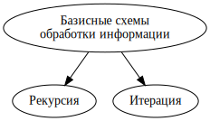
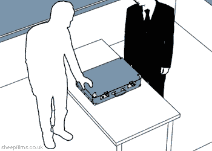
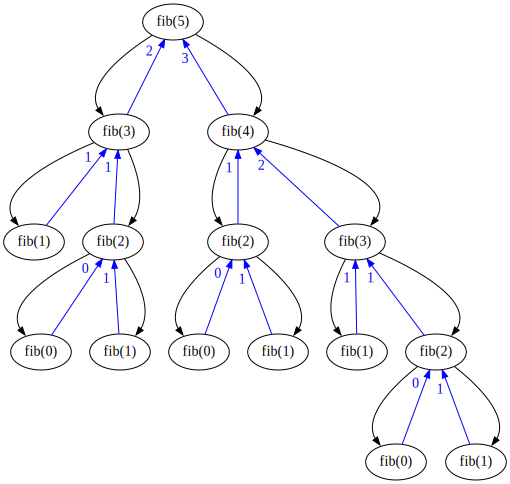

v.3.8, 10 декабря 2021 года
Двумя основными способами обработки информации являются итерация и рекурсия:

Рекурсия — это такой способ организации обработки данных, при котором программа вызывает сама себя непосредственно, либо с помощью других программ.
Итерация — способ организации обработки данных, при котором определённые действия повторяются многократно, не приводя при этом к рекурсивным вызовам программ.
Вот что говорит (и показывает) Википедия:
Реку́рсия — наличие в определении, описании, изображении какого-либо объекта или процесса самого этого объекта или процесса, то есть ситуация, когда объект или процесс является частью самого себя.
Рекурсивное изображение
Эффект Дросте (Droste-effect), названный так в честь пачки голландского какао марки Droste (около 1903 года), на которой женщина держит в руках предмет с изображением её самой, держащей в руках этот предмет и так далее.
Анимированное рекурсивное изображение

Рекурсивная программа
В программировании рекурсия — вызов функции (процедуры) из неё же самой, непосредственно (простая рекурсия) или через другие функции (сложная или косвенная рекурсия), например, функция
fвызывает функциюg, а функцияg— функциюf. Количество вложенных вызовов функции или процедуры называется глубиной рекурсии.
Примеры рекурсивных функций и рекурсивных программ
Вычисление факториала:
def fact(n):
return 1 if n == 0 else n*fact(n - 1)
n = int(input("n -> "))
print(f"{n}! = {fact(n)}")Нахождение чисел Фибоначчи:
def fib(n):
return n if n < 2 else fib(n - 1) + fib(n - 2)
n = int(input("n -> "))
print(f"fib({n}) = {fib(n)}")Связь рекурсии с математической индукцией
У любой рекурсии есть «начало» (начальный текст, первое изображение, явное определение функции для некоторых значений аргумента), которое может рассматриваться как аналог базы математической индукции. Кроме этого в рекурсии есть аналог индуктивного перехода, который обеспечивает потенциально бесконечное «повторение».
Проверка правильности рекурсивных программ
Правильно написанная рекурсивная программа должна гарантировать, что после конечного числа рекурсивных вызовов будет достигнуто выполнение условия прекращения рекурсии, в результате чего цепочка рекурсивных вызовов прервётся.
Очень часто встречаются задачи, в которых количество входных данных сколь угодно велико.
Простейший пример — нахождение суммы элементов последовательности.
При решении подобных задач часто удобно использовать бесконечный цикл while True, выход из которого происходит только в случае возникновения исключительной ситуации или исключения (Exception) — завершения обрабатываемой последовательности:
Файл sum.py
s = 0
try:
while True:
s += int(input("x -> "))
except(EOFError):
print(f"\n s = {s}")При вводе символа, сигнализирующего о конце последовательности (в ОС Linux это символ Ctrl-D, в Windows — Ctrl-Z), метод input возбуждает исключительную ситуацию и программа печатает вычисленное значение.
При работе в Jupyter Notebook с помощью клавиатуры имитировать
достижение конца файла весьма непросто, поэтому в этом случае лучше
слегка изменить вышеприведённую программу, добавив обработку
исключительной ситуации ValueError:
Файл sum_nb.py
s = 0
try:
while True:
s += int(input("x -> "))
except(EOFError, ValueError):
print(f"\n s = {s}")Теперь ввод вместо числа пустой строки будет приводить к возникновению исключительной ситуации и завершению работы программы.
Исключительные ситуации возникают не только при неудачных попытках ввода данных. Другими примерами являются: деление на ноль, извлечение квадратного корня из отрицательного числа, сложение строки с целым числом и целый ряд иных. Вот некоторые примеры:
>>> import math
>>> 1/0
Traceback (most recent call last):
File "<stdin>", line 1, in <module>
ZeroDivisionError: division by zero
>>> math.sqrt(-1.0)
Traceback (most recent call last):
File "<stdin>", line 1, in <module>
ValueError: math domain error
>>> '2' + 3
Traceback (most recent call last):
File "<stdin>", line 1, in <module>
TypeError: must be str, not intПо умолчанию возникновение исключительной ситуации (исключения) приводит к аварийному завершению выполнения программы, но программист может обработать исключительную ситуацию и продолжить выполнение программы.
Подробнее о работе с исключениями в языке Python можно прочитать в официальной документации.
Теорема. Любой алгоритм, реализованный в рекурсивной форме, может быть переписан в итерационном виде, и наоборот.
Данная теорема ничего не говорит о том, как связаны между собой эффективности этих двух алгоритмов.
Переписать программу вычисления чисел Фибоначчи в итерационном виде достаточно легко. Один из возможных результатов такой работы приведён ниже.
def fib(n):
if n < 2:
return n
a, b = 0, 1
for i in range(2, n + 1):
a, b = b, a + b
return b
n = int(input("n -> "))
print(f"fib({n}) = {fib(n)}")Две версии программы вычисления чисел Фибоначчи эквивалентны с точки зрения получаемого результата и обе являются правильными. Но правильность — но далеко не единственное качество, которым должна обладать хорошая программа.
Вот рисунок, иллюстрирующий процесс вычисления fib(5) с помощью приведённой выше рекурсивной программы:

Каждый из экземпляров рекурсивной функции, возникающий в процессе её вызова, можно представлять себе реализующим вычисления на отдельном листе бумаге. Все одновременно существующие экземпляры представляют стопку листов. В простейшем случае однопроцессорной машины лишь один из экземпляров выполняется; все остальные ждут результатов запрошенных ими вызовов.
На рисунке изображены все 15 экземпляров функции fib, принимающие участие в вычислении fib(5). Чёрные стрелочки символизируют рекурсивные вызовы, а синие обозначают возвращаемые результаты.
Ясно, что так организованный процесс вычисления величины fib(5) является крайне неэффективным, так как многие промежуточные значения вычисляются многократно. Например, вызов fib(1) происходит 5 раз.
Сложность рекурсивной программы вычисления чисел Фибоначчи является экспоненциальной,
count = 0
def fib(n):
global count
count += 1
return n if n < 2 else fib(n - 1) + fib(n - 2)
n = int(input("n -> "))
print(f"fib({n}) = {fib(n)}")
print(f"Количество вызовов = {count}")Небольшая модификация кода приведённой выше итерационной программы позволяет убедиться в её линейной сложности:
def fib(n):
if n < 2:
return n
a, b, count = 0, 1, 0
for i in range(2, n + 1):
a, b = b, a + b
count += 1
print(f"Количество итераций = {count}")
return b
n = int(input("n -> "))
print(f"fib({n}) = {fib(n)}")На типичном современном компьютере для вычисления fib(1_000_000) с помощью этой программы требуется 10-15 секунд.
Следующий вопрос вполне естественен — а можно ли находить числа Фибоначчи ещё быстрее?
Знание математики позволяет вывести явную формулу для
Может показаться, что основываясь на ней, легко написать программу со сложностью
Желающие могут попробовать разобраться в том, как работает следующая программа, завершающаяся примерно через половину секунды (при этом бо́льшая часть этого времени уходит на вывод цифр результата на экран, а вовсе не на вычисления).
def fib(n):
return _fib(n)[0]
def _fib(n):
if n == 0:
return (0, 1)
else:
a, b = _fib(n // 2)
c = a * (b * 2 - a)
d = a * a + b * b
if n % 2 == 0:
return (c, d)
else:
return (d, c + d)
n = 1_000_000
print(f"fib({n}) = {fib(n)}")Рассмотрим следующую задачу:
Напишите рекурсивную программу, возводящую число
Ключевая идея решения — «деление пополам». Это метод, который чрезвычайно часто применяется и в программировании и во многих математических рассуждениях:
def pow(a, b):
if b == 0:
return 1
if b % 2 == 0:
t = pow(a, b/2)
return t * t
else:
return a * pow(a, b-1)
a = int(input("a -> "))
b = int(input("b -> "))
print(f"{a}**{b} = {pow(a, b)}")
Как написать программу для вычисления среднего арифметического элементов непустой последовательности целых чисел, если использовать список или иную структуру данных для хранения всех элементов не разрешается?
Данное ограничения является вполне естественным, так как количество элементов последовательности может быть сколь угодно большим и хранение всех их потребует сколь угодно большого объёма памяти.
Немного подумав, можно догадаться до правильного решения: следует в любой момент времени знать сумму уже введённых чисел s и их количество n:
s = 0
n = 0
try:
while True:
s += int(input("x -> "))
n += 1
except(EOFError, ValueError):
print(f"\n Среднее значение = {s/n}")Решение основано на следующих свойствах НОД (gcd):
x = int(input("x -> "))
y = int(input("y -> "))
print(f"gcd({x},{y}) = ", end="")
while True:
if x >= y:
x -= y
else:
y -= x
if x == 0 or y == 0:
break
print(x + y)Напишем программу (реализующую схему Горнера), определяющую значение в целой точке
t = int(input("t -> "))
y = 0
try:
while True:
y = t * y + int(input("x -> "))
except(EOFError):
print(f"\n P({t}) = {y}")Напишем программу, определяющую количество вхождений образца
f, n = 0, 0
try:
while True:
x = input("x -> ").rstrip('\n')
if x == "d" and n == 3:
f, n = f + 1, 0
elif x == "c" and n == 2:
n = 3
elif x == "b" and n == 1:
n = 2
elif x == "a":
n = 1
else:
n = 0
except(EOFError):
print(f"\nf = {f}")